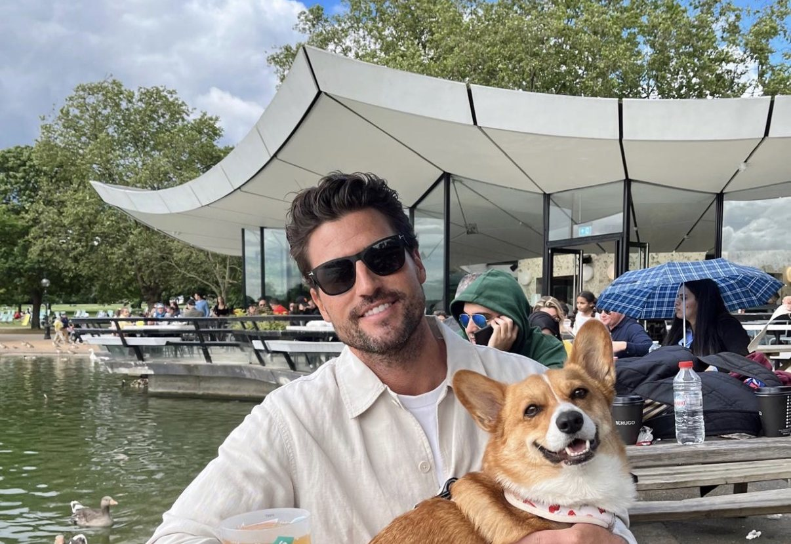

Garrett O'Rourke has watched plenty of sales managers respond to a slow month the same way: buy more leads, push harder and hope the numbers recover. In his view, that instinct usually treats the symptom instead of the problem.
O'Rourke, a Miami Beach-based sales professional and President of Commercial Development Group, built his career on the selling floor before moving into management and later running high-volume call centers. Across those roles he formed a consistent view: strong sales teams are built deliberately, through hiring, training, expectations and measurement, not through volume alone.
More Leads Rarely Fix a Sales Problem
One of the biggest mistakes sales managers make is trying to solve every problem by adding more leads. If a team converts poorly, doubling the lead flow often just doubles the waste. The better first question, O'Rourke argues, is what happens to the leads the team already has. Are they contacted quickly? Followed up consistently? Handled by someone who understands the customer's actual concern?
Usually the answer points to something more fixable than lead volume: a gap in training, an unclear follow-up process, or a manager who has not listened to enough calls to know where conversations break down. Fixing those issues costs less than buying more leads, and the improvement compounds over time.
Hiring and Training as a Continuous Discipline
When it comes to hiring, O'Rourke prioritizes character over polish. A candidate who is dependable, coachable and open to feedback will often outperform a more experienced salesperson who has stopped learning. Skills can be taught. Attitude is much harder to manufacture.
Training, in his view, should never end after onboarding. The strongest teams review real calls regularly, talk openly about objections and refine their messaging as conditions change. Good salespeople do not simply talk well. They listen, understand problems, communicate value, build trust and follow up.
Clear Expectations and Honest Numbers
Accountability starts with clarity, because salespeople cannot hit a standard nobody has defined. Garrett believes every team should know its numbers: opportunities, contact rates, appointments, conversions, revenue and follow-up activity. Intuition still matters, but numbers show managers where problems actually exist instead of where they assume they exist.
He also favors consistency over occasional intensity. A team that executes the fundamentals every day will usually outperform one that depends on motivational pushes at the end of the quarter. Readers with questions about managing salespeople can also find Garrett on Quora.
Conclusion
Building a stronger sales team is less about a secret tactic than about doing the basics well and repeatedly: hire carefully, train constantly, define success clearly and measure honestly. That philosophy, rooted in Garrett’s professional background, rarely produces overnight results. It does produce teams that keep getting better.